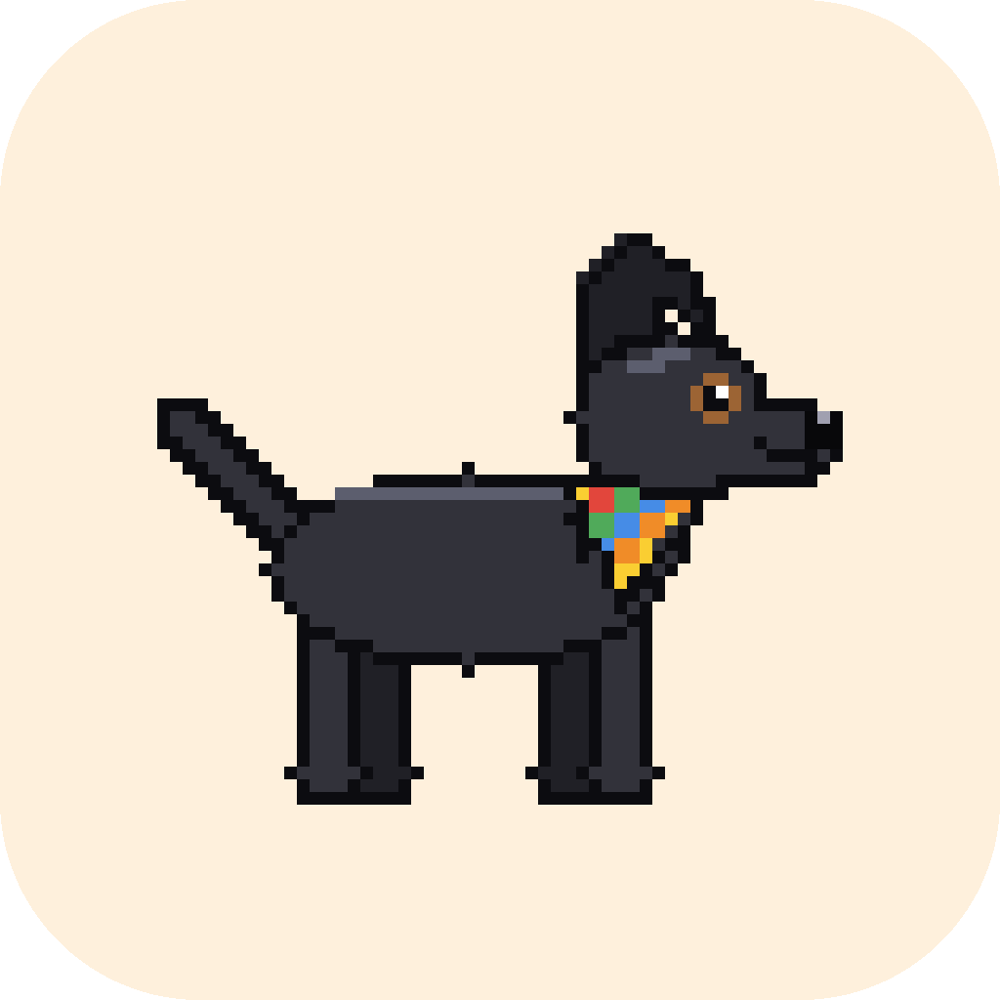

Candola
Una mascota de escritorio que te acompaña en el foco y convierte tus reuniones en tareas.
Qué hace
- Reuniones: las escucha, las transcribe en tu computador y te deja el resumen, las decisiones y tus tareas.
- Foco: timer de pomodoros y rutinas, con la mascota acompañándote.
- Gestión: dicta cómo ordenar tus tareas y aprueba cada cambio.
- Chat y voz: pregúntale a tus reuniones o háblale a la Candola.
Empieza en 3 pasos
-
Descarga el instalador para Windows.
Descargar para Windows
Windows 10 u 11, 64 bits.
Windows puede mostrar “Windows protegió tu PC” porque el instalador aún no está firmado: toca Más información y luego Ejecutar de todas formas. -
Canjea tu invitación para obtener tu key.
Tu key está lista
Guárdala ahora: solo se muestra esta vez y no se puede recuperar.
-
Pégala en la app: Ajustes → Asistente → Key de Candola.
Cuando la app pregunte, acepta Enviar errores: así podemos arreglar lo que te falle.
¿No tienes invitación? Por ahora la Candola está en prueba cerrada. Pídele una a quien te contó de ella.
Privacidad
- El audio de las reuniones se transcribe en tu computador y no se envía. Solo el texto va a la IA, para sacar las tareas y el resumen.
- La key es tu identidad: no pedimos correo ni contraseña.
- El envío de errores es opcional: la app te pregunta al abrirla. Si aceptas, manda errores, tiempos y niveles de audio, nunca lo que se dijo.